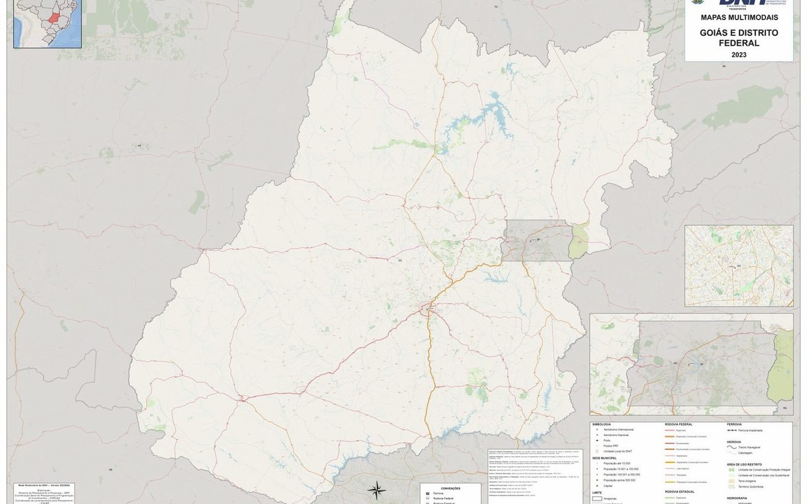
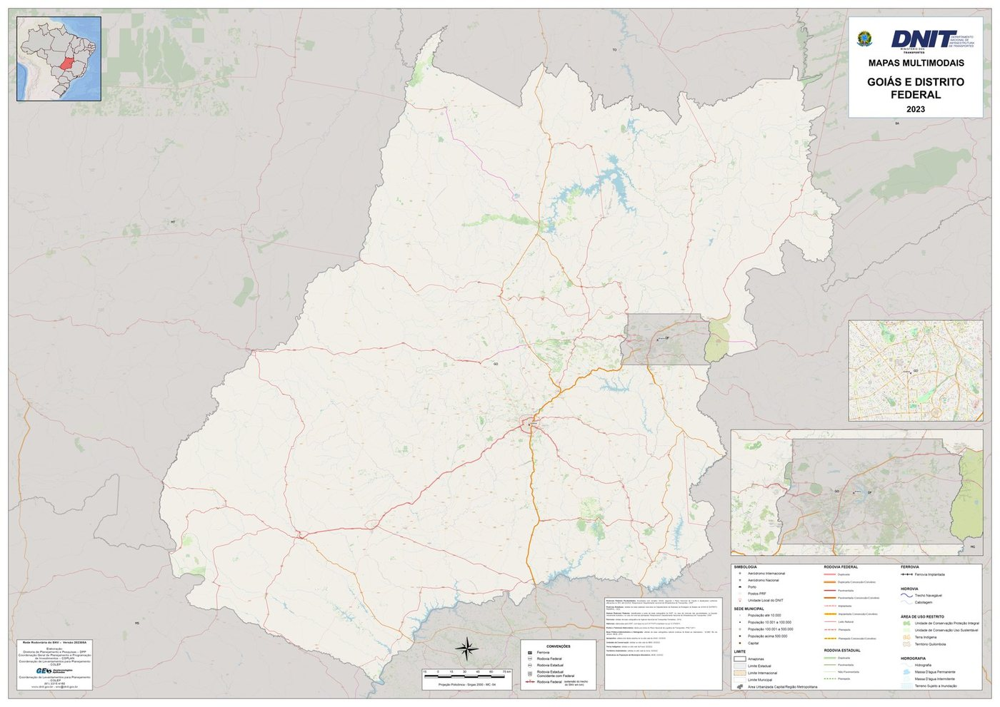

DNIT Multimodal Maps: 27 official maps generated from the database
DNIT's Multimodal Maps show roads, railways, waterways, ports, airfields and protected areas for each Brazilian state and for the country. I turned the production of these 27 official A0 maps into a database-driven atlas that generates the whole set with no manual layout work.
27 mapsofficial A0 sheets for every state and for Brazil, generated automatically from the database
Project sheet
- Task
- Cartographic automation of an official map series from a spatial database
- Data and scale
- Official SNV road system, IBGE BC250, hydrography and protected areas in PostgreSQL/PostGIS
- Method and validation
- Layout rules derived from measuring the published maps; automatic scale in 1:25,000 steps
- Result
- 27 official A0 maps generated from the database, published on the DNIT website

Problem
Every state has its own shape and size, and each sheet used to be laid out by hand: the full set took 6 to 8 months. The goal was for the database to drive the layout, so each new SNV release turns into maps with no rework.
Data and scale
- 27 A0 maps: 26 state sheets (Goiás and the Federal District share one) plus Brazil.
- 20 states in landscape and 6 in portrait, with orientation stored in the database.
- Official datasets organized in thematic PostGIS schemas, in SIRGAS 2000.
Approach
- Measured the published maps and turned the position and size of every element into layout rules for A0 paper.
- PostGIS coverage views per paper orientation, with a mask that highlights the current state.
- Three atlas layouts (landscape, portrait and Brazil) where position, size and scale are expressions read from the database.
- Automatic scale and special insets, such as Fernando de Noronha and the Federal District.
How I validated it
- Every generated map checked against the rules measured from earlier editions.
- Project kept running through SNV release 202410A, with the process reproduced by the team.
Result
- Automated generation of all 27 official maps from the database, with no manual layout.
- Method recorded in Technical Note 101/2023 and in a team manual, both signed by me.
- Maps published on the DNIT website.
My role
Author of the method, the database, the atlas layouts, the technical note and the manual.
Figures

